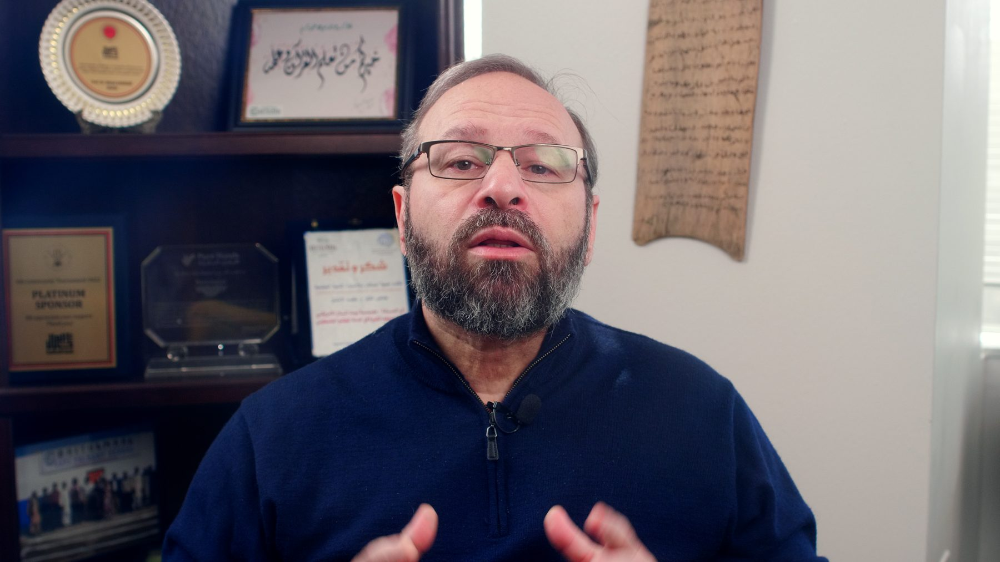
Gaza Orphan Sponsorship
"Children should never have to understand the cruelty of the world before they've had the chance to experience its kindness."
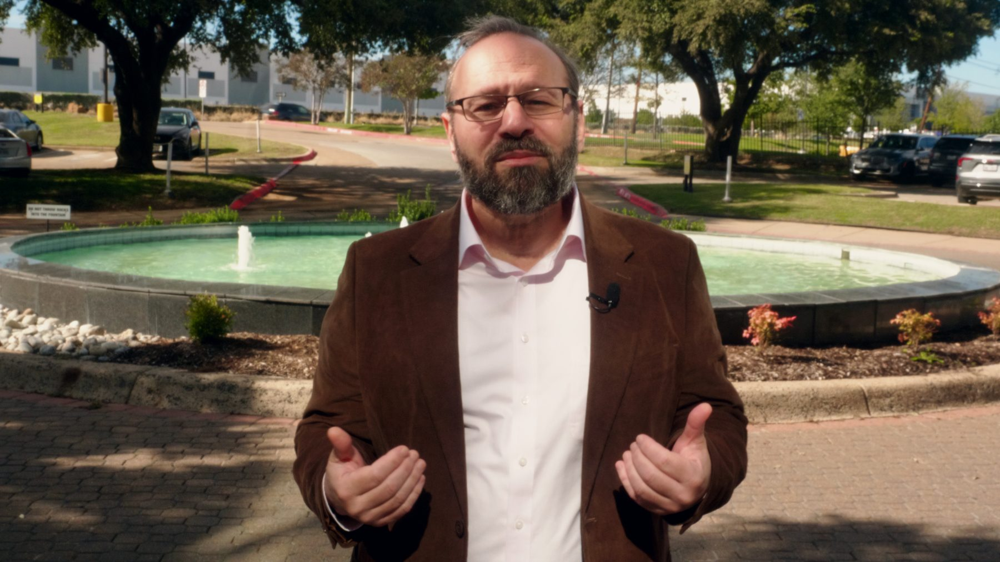
Mazen Mokhtar recorded every appeal Baitulmaal sent us, each in its own wardrobe and setting, plus a walk-and-talk, an outdoor version of the end-of-year message and an arrival sequence the editors can open on.
Mazen's End of Year message from Room 1, intercut with drone footage from the Kenya food distribution we filmed in February, so donors see the work he is thanking them for.
Six videos from one office can easily look like the same video six times. We gave each script its own outfit and setup, so they can run in the same feed during Ramadan and the end-of-year push without blurring together.

"Children should never have to understand the cruelty of the world before they've had the chance to experience its kindness."
"Imagine if every Muslim fulfilled their Zakat this year. What would our world look like today?"
Recorded inside as written, then again outdoors at the fountain in Mazen's own words, so the team has two versions to choose from.
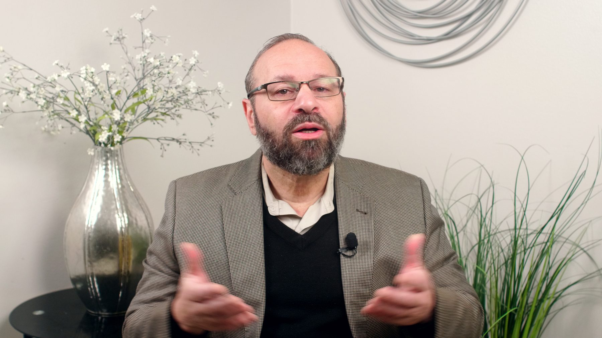
"A mother in labor in Gaza, a child in pain in Sudan, a hospital with limited resources in Kenya. What happens next?"
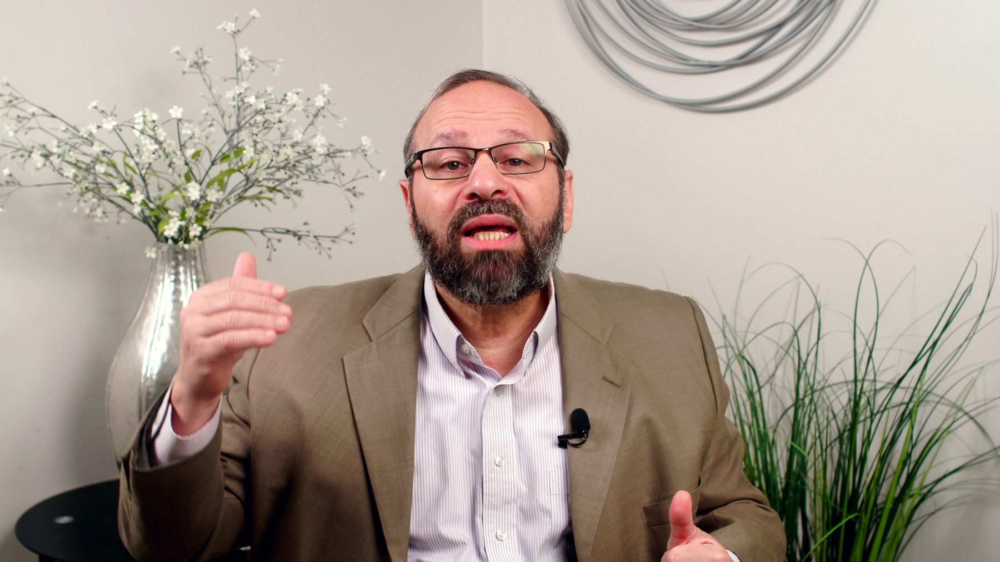
"Your mother, your mother, your mother." Opens on the hadith, then moves to the Every Pregnancy Ramadan appeal.
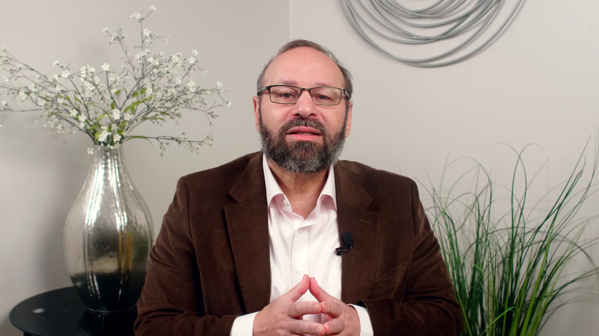
"Baitulmaal wasn't born in a corporate boardroom. It's a 1,400-year-old promise." Also recorded as a walk-and-talk outside.
This gives every one of the six videos an opening or a closing that moves. The sequence runs from the parking lot to the Baitulmaal wall.
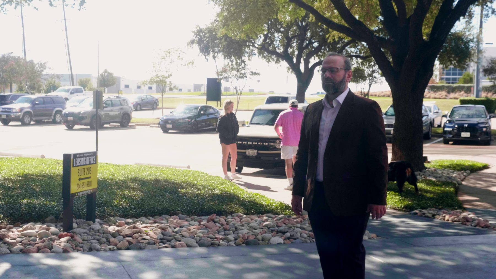
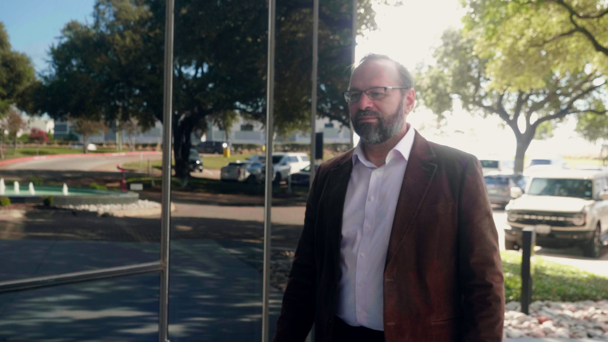
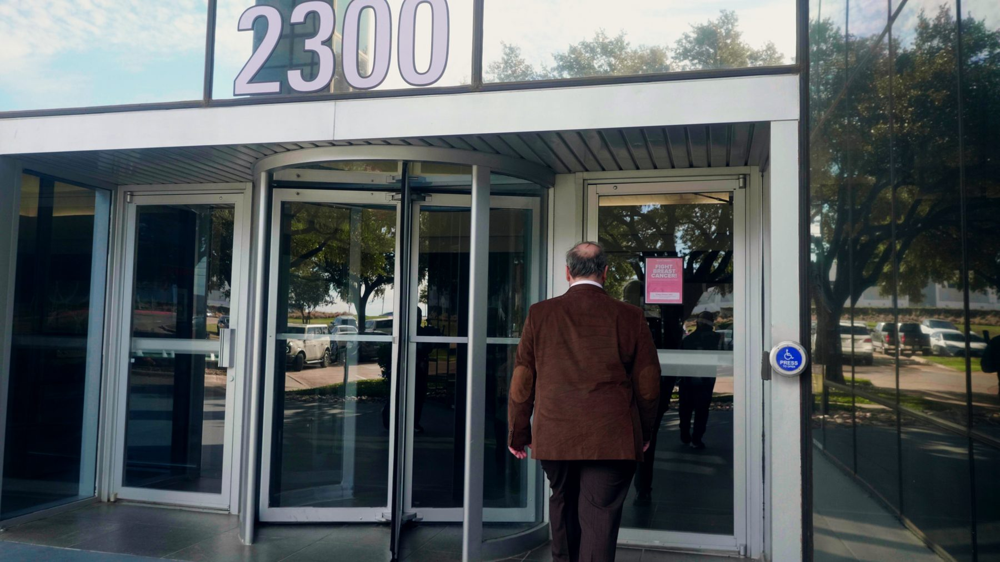
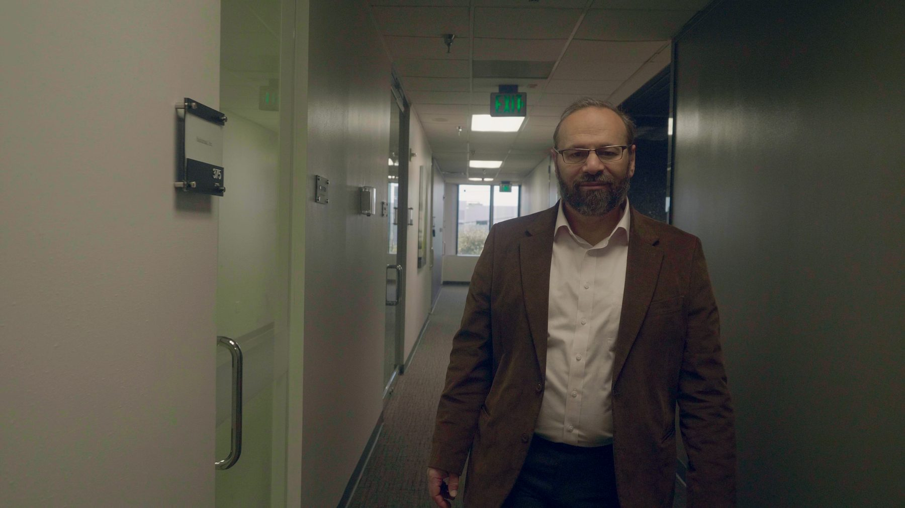
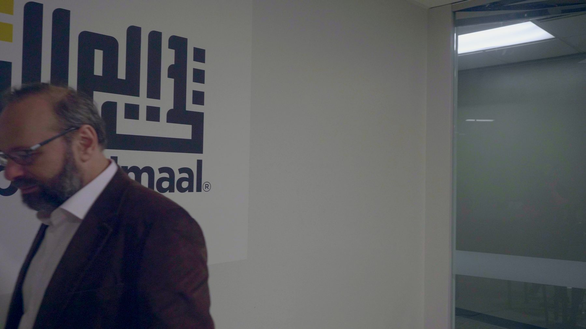
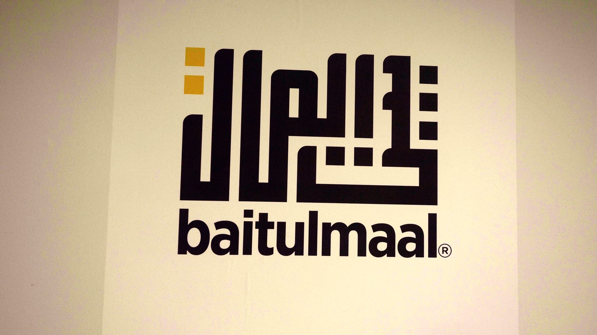
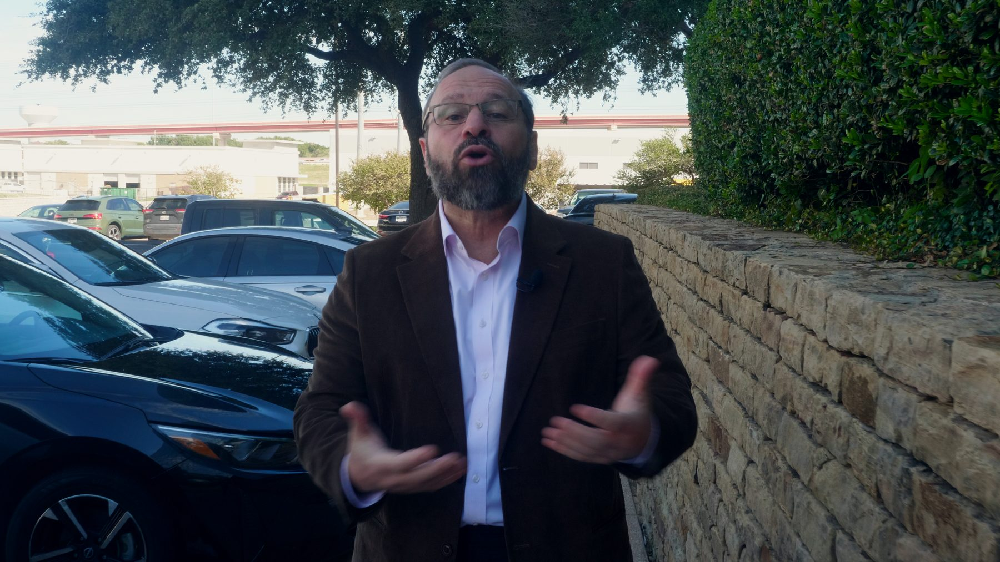
The walk-and-talk and the fountain take were shot on a gimbal in natural light. The movement suits vertical social, where a seated talking head gets scrolled past fastest.
Mazen was filmed in V-Log, a flat camera profile that keeps detail in bright windows and dark suits. Drag the line to compare the frame straight off the camera with the color-corrected still. Every image on this page has the same correction.
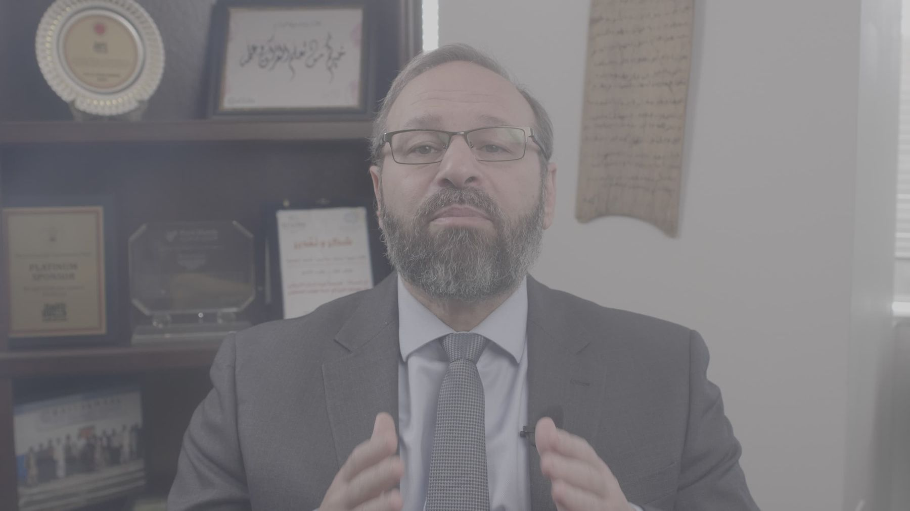
Off cameraGradedMazen has been on camera with us in Irving since December 2024, with stops in Istanbul and Beirut along the way. Here is the last office shoot next to this one.
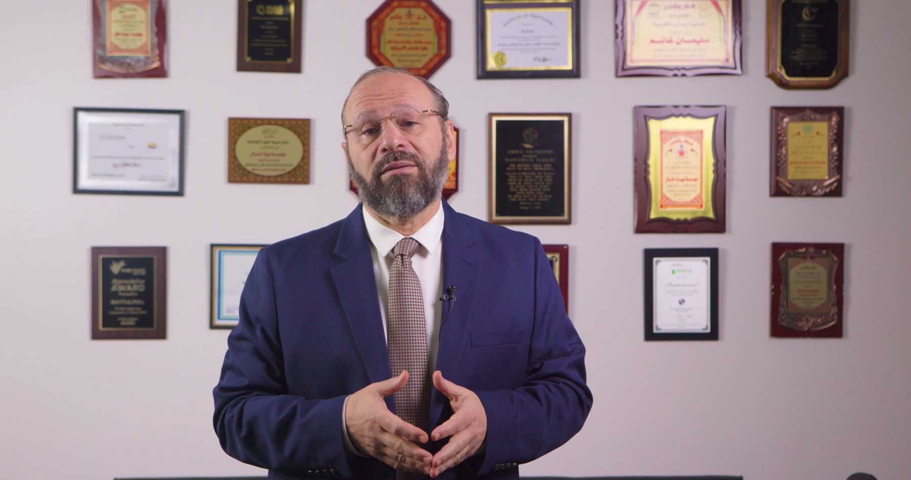
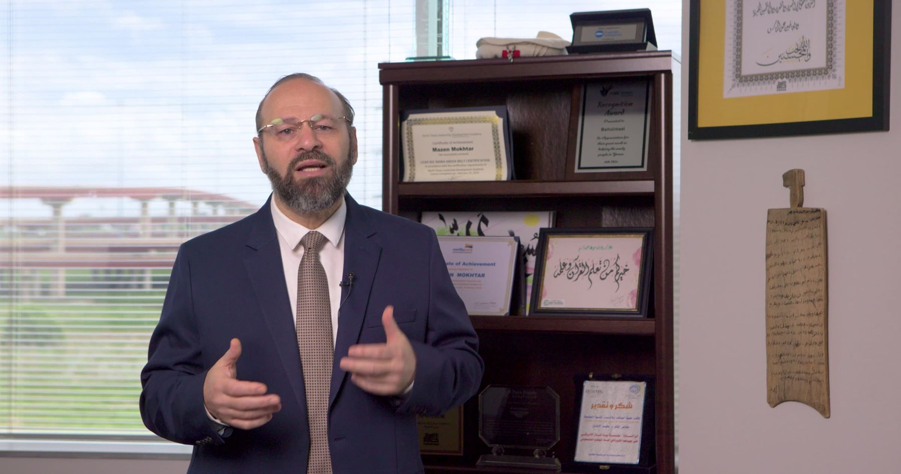
Bottom row: Mazen walking and talking outside the office.
| April 2026 | October 2026 | |
|---|---|---|
| Scripts | 2 | 6 |
| Wardrobe | 1 suit | 6 outfits |
| Setups | 2, both inside the office | 3: two rooms and the fountain outside |
| Movement | Standing to camera | Gimbal walk-and-talk, arrival sequence from car park to logo |
| Versions | One per script | Extra outdoor takes of End of Year and the name story |
| Built for | Horizontal | Shot horizontal, framed for vertical cuts too |